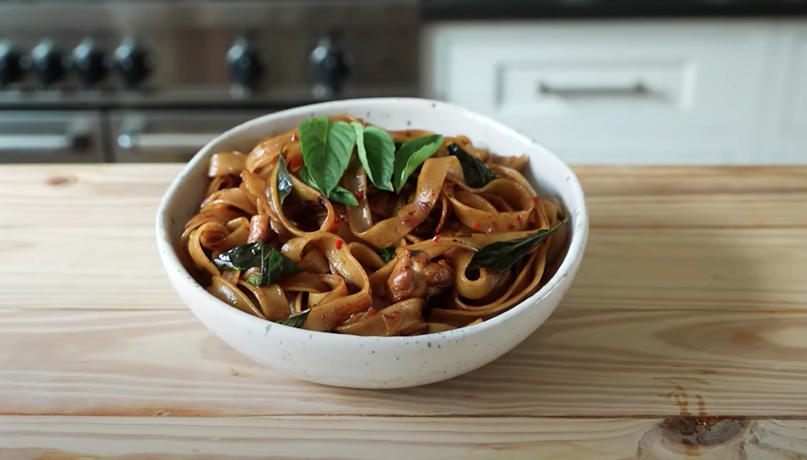
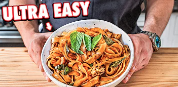

Drunken Noodles

Ingredients:
SAUCE
- 1 tablespoon (15g) of regular soy sauce
- 1 tablespoon (15g) dark soy sauce
- 1 tablespoon (20g) fish sauce
- 2 tablespoons (35g) oyster sauce
STIR FRY
- Vegetable Oil for cooking
- 8oz (227g) chicken thighs, cut into small pieces
- 1-2 shallots, thinly sliced
- 8 cloves garlic, thinly sliced
- 1 red Fresno chili, deseeded & finely chopped
- 2 Thai chilies, finely chopped
- 8oz (227g) wide or broad dried rice noodles (re-hydrated)
- 1 cup (13g) Thai Basil leaves
- Fish Sauce to Taste
- Salt
Instructions:
SAUCE
- In the small bowl, add all the ingredients and whisk until combined.
STIR FRY
- In a wok, add enough oil to coat the bottom; once it begins to smoke, add chicken pieces, sear them for about 2 minutes, and stir fry; once it starts to get some color and is cooked through, about 4 to 5 minutes, remove the chicken and place in a small bowl.
- Re-oil the wok; once hot, add shallots, season lightly with salt, and stir fry for about 2 minutes, or until it starts to turn translucent; then add garlic, stir fry for 1 minute or until fragrant. Next, add Fresno chili and Thai chili, stir fry for 30 seconds, add your noodles and your chicken and stir fry for 1 minute or 2.
- Once the veggies get evenly distributed, add your sauce; let it boil while tossing and stir-frying, about 45 seconds, next, add Thai basil, and mix them until they begin to wilt. Serve in a bowl with garnish.
Click the thumbnail below to watch how Joshua Weissman goes about cooking this delicious meal.

Go back home